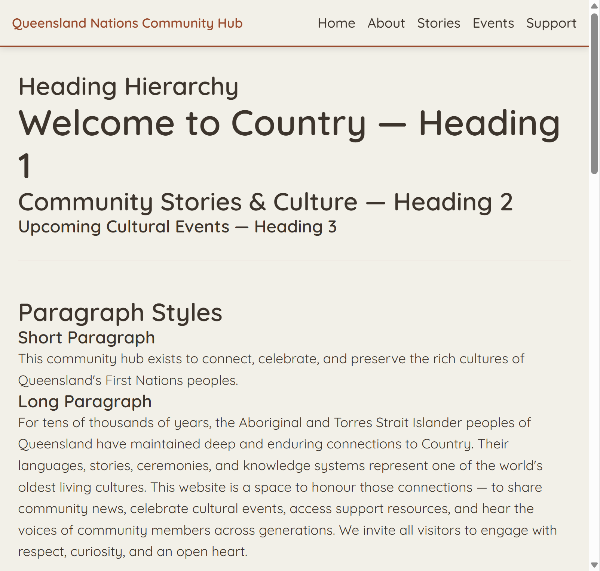
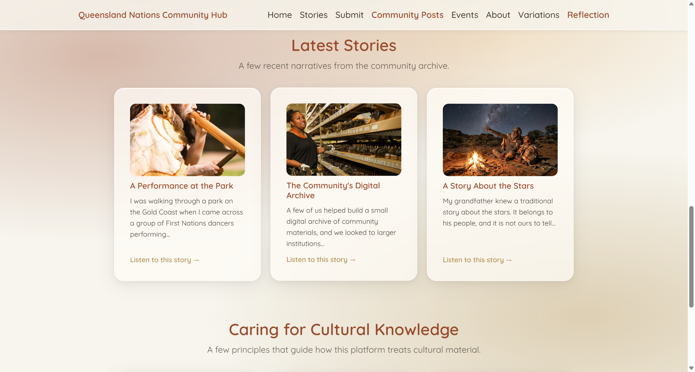
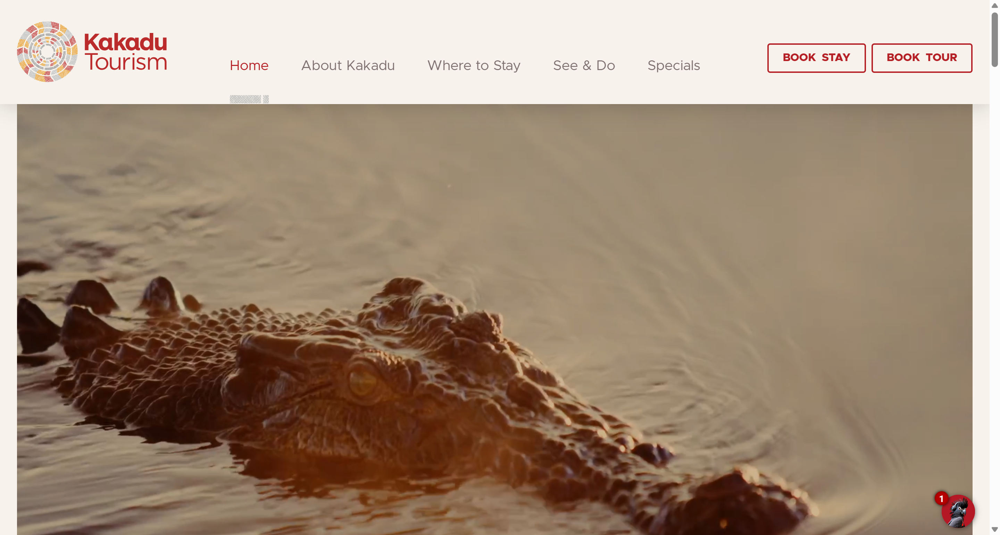
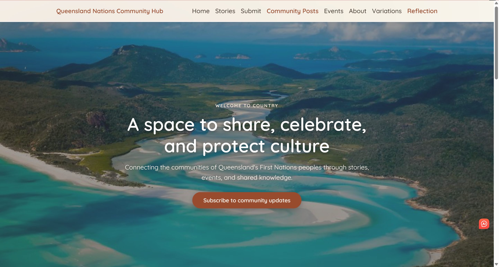

Reflection
On the decisions, challenges, and reasoning behind the A3 development of the Community Hub.
From A2 to A3: What I Set Out to Do
A3 started from the design system I built in A2 — the terracotta and ochre colours, the Quicksand typeface, and a warm, traditional feeling that suited a site about First Nations culture. I didn't want to throw that away. What I wanted was to turn it into a site that actually worked: somewhere people could read and listen to stories, share their own content, find events, and subscribe.
But fairly early on, I realised something about my A2 work bothered me. Looking at it honestly, the pages felt flat. Without any imagery, the warmth I had aimed for just wasn't coming through, and that went against the whole point of building a cultural community space. So I made my first real A3 decision:
- Keep the A2 colour language — I didn't want to lose the identity I'd built.
- Add a soft, diffuse-light gradient background to give the pages depth.
- Introduce glassmorphism cards so content felt layered and alive rather than printed on a blank page.
Changing my own earlier work wasn't easy to admit was necessary, but noticing the weakness and fixing it felt like a more honest version of the design than pretending A2 was already finished.
Before and after
The difference is clearest side by side — the original A2 version, and the same design language after the background and card changes:


Key Decisions and the Reasoning Behind Them
Designing the homepage around the user, not the form
In A2 my homepage was basically one subscription form. The more I looked at it, the more it felt wrong — the very first thing a visitor saw was a request for their details, before the site had given them any reason to care. So I rebuilt it. The homepage now has:
- A welcoming hero and a short introduction to what the community is.
- Clear ways into the rest of the site, and a preview of recent stories.
- A small section explaining how the platform treats cultural material.
The subscription form moved into a pop-up that opens only when someone chooses to subscribe. Subscribing became something a visitor opts into, not the toll they pay to enter.
Separating content from code
For the dynamic content, I kept the stories in a separate data file instead of writing them into the pages. It's a small decision but it mattered to me: I can edit content in one place, and the homepage preview and the full Stories page always stay in sync because they read from the same source. I was trying to build for change, not just for how things looked on the day.
Designing for uncertainty
Something I kept coming back to is that data isn't always there. Every page that loads data handles three situations on purpose:
- Loading — so the user knows something is happening.
- Empty — a friendly message when there's genuinely nothing to show.
- Error — a clear, calm message when a request fails.
I treated the empty and error states as real parts of the design, not afterthoughts. How a site behaves when something goes wrong says a lot about whether it respects the people using it.
Cultural Responsibility: The Decisions That Mattered Most
Because this project is about First Nations culture, the decisions I'm proudest of aren't technical ones. The biggest was choosing not to use any real Aboriginal or Torres Strait Islander cultural material at all. I made that choice for two honest reasons:
- I hadn't been given permission to use it — and cultural knowledge isn't mine to take without the consent of the people it belongs to.
- I hadn't done the careful checking real material would need, and presenting something unverified as authentic could spread misinformation.
So every story on the site is clearly a fictional demonstration. Where I refer to something real — an institution, or a principle like FPIC (consent) or ICIP (Indigenous Cultural and Intellectual Property) — I say plainly what is real and what I made up. One story deliberately deals with knowledge that isn't meant to be shared: it records only that the story exists and who it belongs to, never the story itself. That was my way of showing that protecting culture doesn't always mean publishing it.
I also want to be honest about a limitation I haven't solved. The platform has no moderation, so anyone can submit anything. In a real version, inaccurate or disrespectful content could cause real harm to Indigenous communities. I chose to state this openly on the site rather than hide it, and I think proper moderation would be the essential next step before something like this could exist for real.
Accessibility and the Wider User
I tried to think about people who'd experience the site differently from me. A few of the things I did:
- Every audio story shows its full written text too, so people who are deaf or hard of hearing — or just can't play sound right then — aren't left out.
- Status messages are announced to screen readers.
- The subscription pop-up manages keyboard focus and closes with the Escape key.
- Buttons are big enough to tap comfortably on a phone.
What struck me is that the written-text decision helps everyone, not only people who need it — someone on a quiet train benefits just as much. The About page also opens with an Acknowledgement of Country, which felt important to include rather than optional.
How I Worked, and How I Used AI
I used AI (Claude) as a tool throughout this phase. I used it to:
- Scaffold page structures quickly so I could iterate faster.
- Help me debug — I gave it my own design documents, code, DevTools screenshots, and error reports so the help fit my actual project.
- Talk through options when I wasn't sure which way to go.
What it didn't do was decide things for me. The design direction, the cultural choices, the structure, and every final call were mine. There were times I pushed back — when a suggestion didn't match what I wanted, or when an approach risked disrespecting cultural material, I said no and went a different way.
It also wasn't magic. The AI made small mistakes that took me real time to track down — files in the wrong folder, a filename with the wrong extension, a styling rule that pushed text out of place. Working like this actually taught me something useful: treat AI output as a draft to check, never an answer to trust on sight.
AI wasn't my only way of learning, though. Looking at reference pages and the work of other designers turned out to be just as important. Seeing how experienced designers handle things — readability, visual balance, how much space to leave, when to hold back — helped me notice and avoid problems in my own pages that I might not have caught on my own. It reminded me that design isn't only about getting something to work; it's a skill you build by studying good examples and slowly improving your own taste and judgement. I see that as something to keep doing well beyond this project.
A concrete example is my homepage. The full-screen hero image was directly inspired by the homepage of Kakadu Tourism, an Indigenous-owned site that leads with large, immersive landscape imagery. Studying how they used a single strong image to set an emotional tone — and how they kept their text readable on top of it — helped me design my own hero with confidence rather than guesswork. Looking at a real, well-made cultural site made my decisions feel grounded in something proven, not just my own assumptions.


Challenges and What I Learned
The hardest problems were usually the ones I couldn't see at first:
- A diffuse background that wouldn't show up — it turned out a full-height wrapper was sitting on top of it. I fixed it by putting the background on the root element so nothing could cover it.
- Caching and styles rendering differently across pages, which cost me time to chase down.
- Small mismatches — a file in the wrong folder, a filename ending in the wrong extension — that broke things in scary-looking ways but came down to careful checking.
Those taught me that precision matters, and that staying calm and systematic beats guessing when something breaks.
The bigger lesson is that this kind of work is as much about responsibility as it is about code. This is especially true when it comes to culture and respect: I can't put irresponsible or unpermitted content into the site, and so sometimes choosing not to be misled — knowing what to leave out — was one of the most important judgements I had to make.